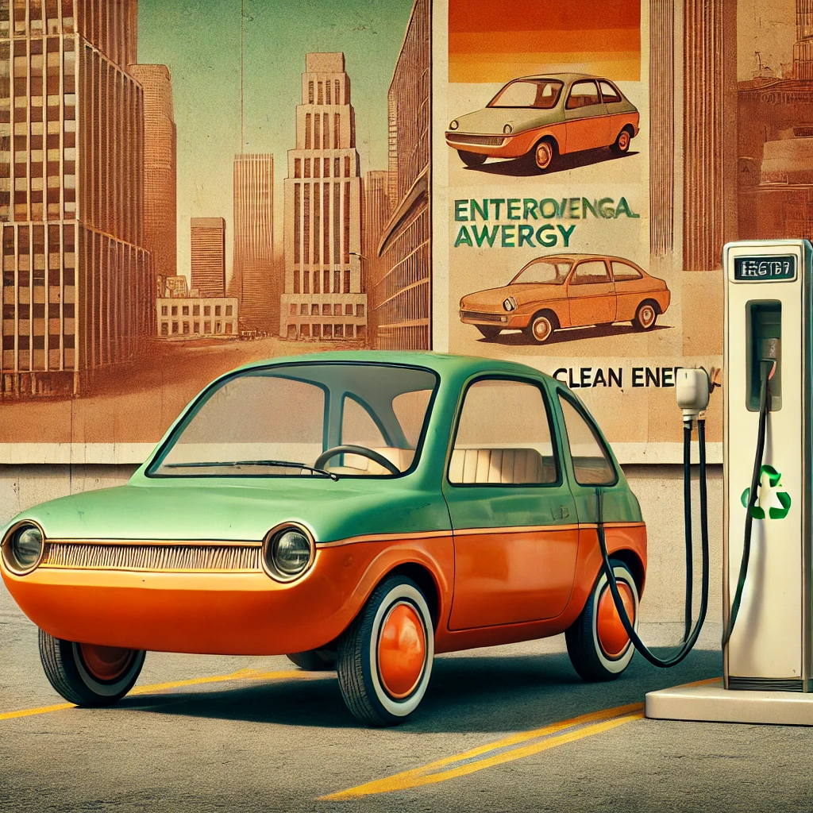
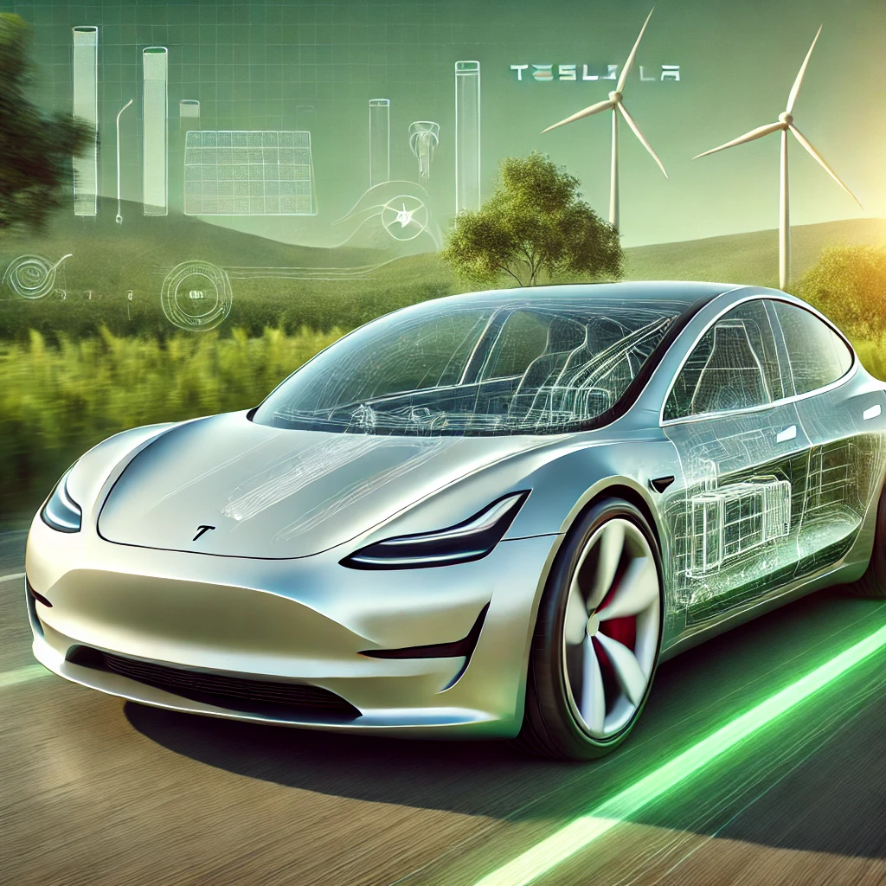

Automobile Electrice
Descoperă lumea mașinilor electrice!
Bine ai venit pe site-ul dedicat mașinilor electrice! Aici vei descoperi tot ce trebuie să știi despre mașinile care definesc viitorul transportului. Dacă ești interesat de sustenabilitate, eficiență și tehnologie de vârf, ești în locul potrivit. Mașinile electrice sunt mai mult decât un trend – sunt o revoluție în mobilitate, iar noi suntem aici să îți oferim informațiile necesare pentru a înțelege de ce aceste vehicule reprezintă o alegere inteligentă și ecologică.
De ce să Alegi o Mașină Electrică?
Mașinile electrice nu reprezintă doar o alternativă la vehiculele convenționale, ci sunt o soluție durabilă și inteligentă pentru viitorul mobilității. Iată principalele motive pentru care merită să faci tranziția la o mașină electrică:
1. Impact Minim Asupra Mediului
Mașinile electrice (EV) sunt construite pentru a reduce amprenta de carbon și a contribui la un mediu mai curat. Spre deosebire de mașinile pe combustie, vehiculele electrice nu emit gaze de eșapament, eliminând complet emisiile poluante. Acest lucru nu doar că ajută la combaterea poluării atmosferice, ci și la reducerea emisiilor de gaze cu efect de seră, având un impact pozitiv asupra schimbărilor climatice. Alegerea unui EV contribuie astfel la un viitor mai verde pentru generațiile următoare.2. Costuri Reduse de Operare și Întreținere
Una dintre cele mai mari avantaje ale mașinilor electrice este economia semnificativă pe termen lung. Costul de încărcare este mai redus în comparație cu prețul combustibilului fosil, iar întreținerea este mai simplă. De ce? Motorul electric are mai puține componente mobile, ceea ce reduce frecvența și complexitatea reparațiilor. Fără schimburi de ulei, fără filtre de combustie și fără curele de transmisie de înlocuit – toate acestea contribuie la o experiență de întreținere mai ieftină și mai ușor de gestionat.3. Eficiență Energetică Superioară
Mașinile electrice sunt semnificativ mai eficiente din punct de vedere energetic decât vehiculele pe benzină sau motorină. De exemplu, o mașină electrică poate folosi până la 85-90% din energia din baterie pentru a propulsa vehiculul, în timp ce o mașină cu motor pe combustie utilizează doar aproximativ 20-30% din energia stocată în combustibil. Această eficiență superioară se traduce prin mai puțină energie irosită și mai multă autonomie la fiecare încărcare, un aspect crucial pentru cei care parcurg distanțe mari.4. Tehnologii de Ultimă Generație și Inovație Continuă
Vehiculele electrice nu sunt doar „eco”, ci sunt și dotate cu cele mai noi tehnologii în domeniul auto. De la funcții avansate de asistență la condus și până la actualizări de software over-the-air, EV-urile sunt un veritabil „smartphone pe roți.” Mulți producători investesc masiv în dezvoltarea de noi funcționalități precum conducerea autonomă, sistemele de infotainment integrate și siguranță activă. Practic, conduci un vehicul care evoluează constant și se adaptează la ultimele standarde tehnologice.5. Confort și Experiență de Condus Silențioasă
Un alt avantaj important al mașinilor electrice este confortul oferit de un motor extrem de silențios. Fără vibrațiile și zgomotul specifice motoarelor pe combustie, călătoriile devin mult mai plăcute și relaxante. De asemenea, mașinile electrice sunt renumite pentru accelerația lor instantanee. Chiar și modelele de EV-uri standard oferă o reacție rapidă la accelerație, ceea ce face ca experiența de condus să fie foarte dinamică și captivantă.6. Infrastructura de Încărcare Într-o Dezvoltare Accelerată
Deși rețeaua de stații de încărcare este încă în curs de extindere în multe regiuni, investițiile în infrastructură cresc rapid. Orașele și guvernele din întreaga lume dezvoltă rețele de încărcare publice și private, iar majoritatea proprietarilor de EV își pot instala cu ușurință o stație de încărcare acasă. În plus, multe stații de încărcare rapidă permit reîncărcarea unei baterii la aproximativ 80% în mai puțin de o oră, ceea ce face ca alimentarea să fie din ce în ce mai convenabilă.7. Beneficii Financiare și Stimulentare
Multe țări și orașe oferă stimulente financiare pentru achiziția unui EV. Acestea pot include reduceri de taxe, scutiri de impozite, subvenții, acces la benzi dedicate sau parcări gratuite. În plus, în multe zone, costurile de înmatriculare și asigurare sunt mai mici pentru mașinile electrice comparativ cu cele tradiționale. Astfel, deși prețul inițial poate fi mai mare, economiile ulterioare fac ca investiția într-o mașină electrică să fie una inteligentă.

